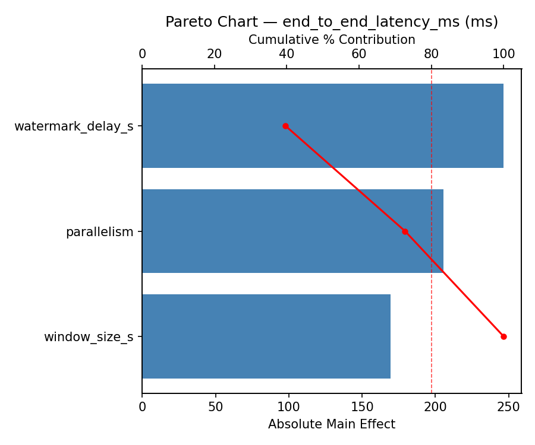
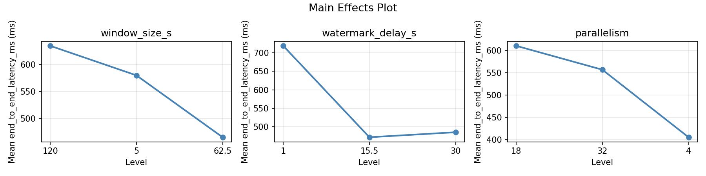
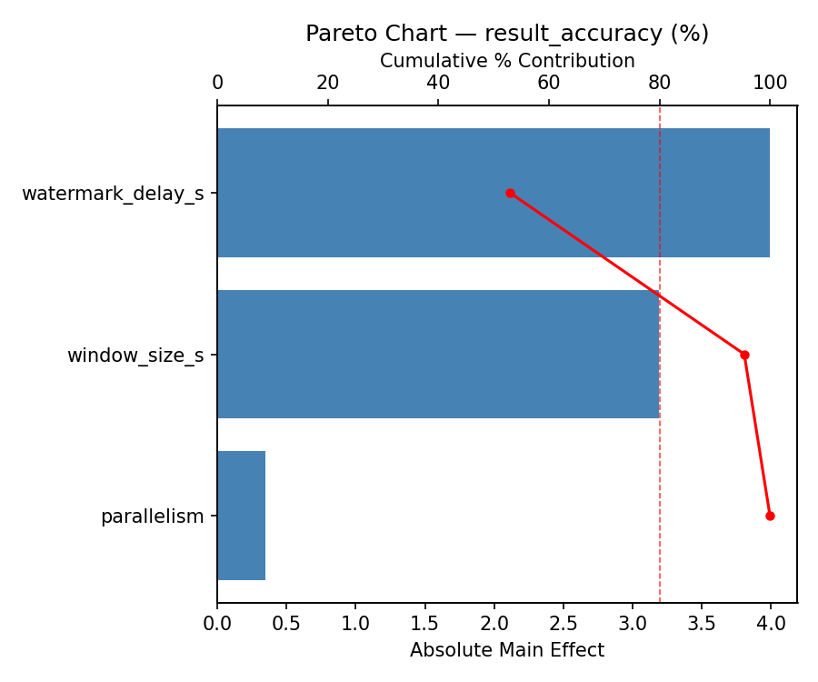
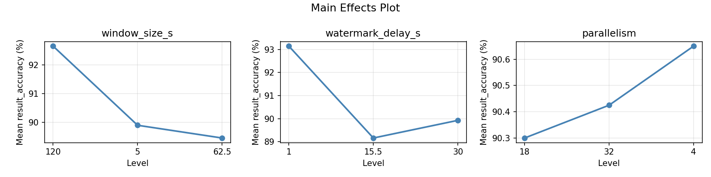
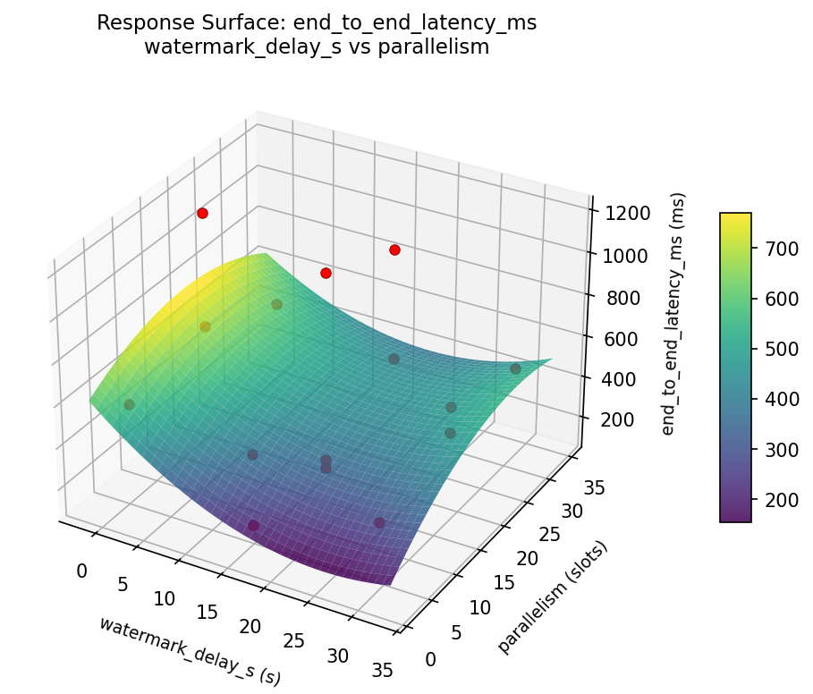
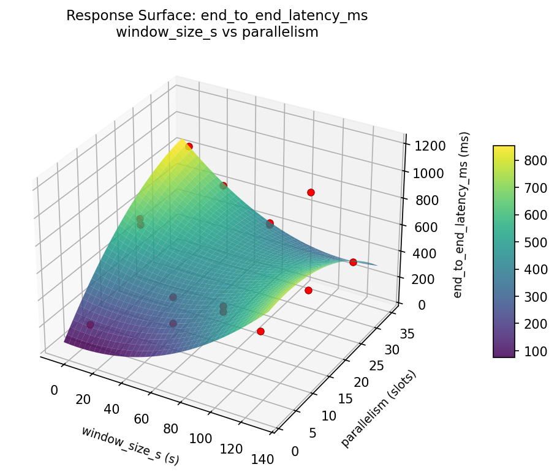
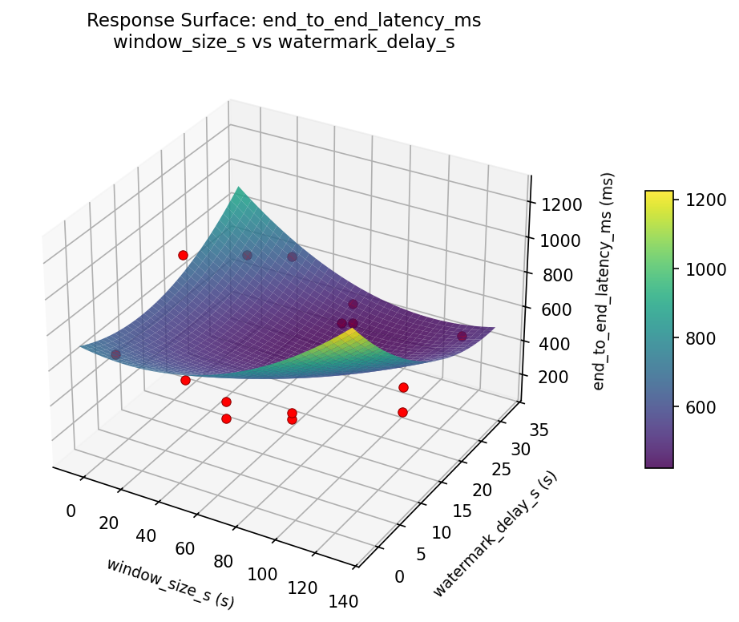
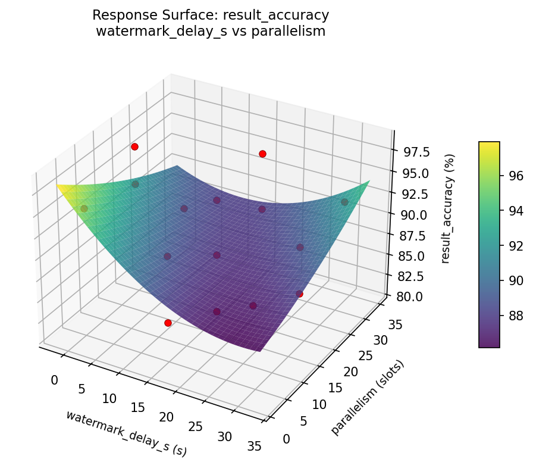
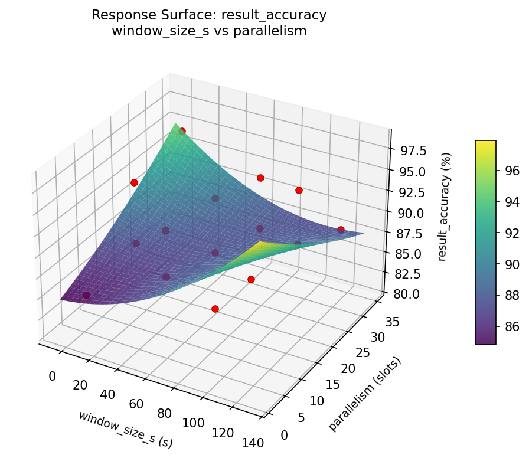
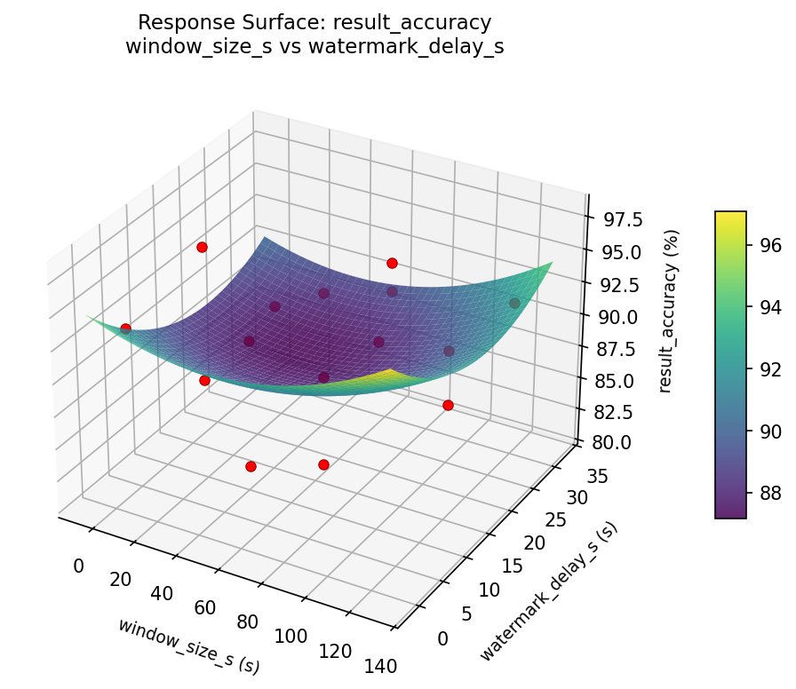

Summary
This experiment investigates stream processing windowing. Box-Behnken design to tune Flink window size, watermark delay, and parallelism for latency and accuracy.
The design varies 3 factors: window size s (s), ranging from 5 to 120, watermark delay s (s), ranging from 1 to 30, and parallelism (slots), ranging from 4 to 32. The goal is to optimize 2 responses: end to end latency ms (ms) (minimize) and result accuracy (%) (maximize). Fixed conditions held constant across all runs include checkpoint interval ms = 10000, state backend = rocksdb.
A Box-Behnken design was chosen because it efficiently fits quadratic models with 3 continuous factors while avoiding extreme corner combinations — requiring only 15 runs instead of the 8 needed for a full factorial at two levels.
Quadratic response surface models were fitted to capture potential curvature and factor interactions. The RSM contour plots below visualize how pairs of factors jointly affect each response.
Key Findings
For end to end latency ms, the most influential factors were watermark delay s (56.6%), parallelism (28.5%), window size s (15.0%). The best observed value was 126.0 (at window size s = 5, watermark delay s = 15.5, parallelism = 4).
For result accuracy, the most influential factors were watermark delay s (37.8%), parallelism (35.9%), window size s (26.4%). The best observed value was 97.9 (at window size s = 62.5, watermark delay s = 30, parallelism = 4).
Recommended Next Steps
- Run confirmation experiments at the predicted optimal settings to validate the model.
- Consider whether any fixed factors should be varied in a future study.
Experimental Setup
Factors
| Factor | Low | High | Unit |
|---|
window_size_s | 5 | 120 | s |
watermark_delay_s | 1 | 30 | s |
parallelism | 4 | 32 | slots |
Fixed: checkpoint_interval_ms = 10000, state_backend = rocksdb
Responses
| Response | Direction | Unit |
|---|
end_to_end_latency_ms | ↓ minimize | ms |
result_accuracy | ↑ maximize | % |
Configuration
{
"metadata": {
"name": "Stream Processing Windowing",
"description": "Box-Behnken design to tune Flink window size, watermark delay, and parallelism for latency and accuracy"
},
"factors": [
{
"name": "window_size_s",
"levels": [
"5",
"120"
],
"type": "continuous",
"unit": "s"
},
{
"name": "watermark_delay_s",
"levels": [
"1",
"30"
],
"type": "continuous",
"unit": "s"
},
{
"name": "parallelism",
"levels": [
"4",
"32"
],
"type": "continuous",
"unit": "slots"
}
],
"fixed_factors": {
"checkpoint_interval_ms": "10000",
"state_backend": "rocksdb"
},
"responses": [
{
"name": "end_to_end_latency_ms",
"optimize": "minimize",
"unit": "ms"
},
{
"name": "result_accuracy",
"optimize": "maximize",
"unit": "%"
}
],
"settings": {
"operation": "box_behnken",
"test_script": "use_cases/39_stream_processing_windowing/sim.sh"
}
}
Experimental Matrix
The Box-Behnken Design produces 15 runs. Each row is one experiment with specific factor settings.
| Run | window_size_s | watermark_delay_s | parallelism |
|---|
| 1 | 62.5 | 1 | 4 |
| 2 | 62.5 | 15.5 | 18 |
| 3 | 120 | 15.5 | 32 |
| 4 | 120 | 15.5 | 4 |
| 5 | 62.5 | 15.5 | 18 |
| 6 | 62.5 | 15.5 | 18 |
| 7 | 5 | 15.5 | 32 |
| 8 | 120 | 1 | 18 |
| 9 | 62.5 | 1 | 32 |
| 10 | 120 | 30 | 18 |
| 11 | 5 | 15.5 | 4 |
| 12 | 62.5 | 30 | 32 |
| 13 | 5 | 1 | 18 |
| 14 | 5 | 30 | 18 |
| 15 | 62.5 | 30 | 4 |
Step-by-Step Workflow
1
Preview the design
$ python doe.py info --config use_cases/39_stream_processing_windowing/config.json
2
Generate the runner script
$ python doe.py generate --config use_cases/39_stream_processing_windowing/config.json \
--output use_cases/39_stream_processing_windowing/results/run.sh --seed 42
3
Execute the experiments
$ bash use_cases/39_stream_processing_windowing/results/run.sh
4
Analyze results
$ python doe.py analyze --config use_cases/39_stream_processing_windowing/config.json
5
Get optimization recommendations
$ python doe.py optimize --config use_cases/39_stream_processing_windowing/config.json
6
Generate the HTML report
$ python doe.py report --config use_cases/39_stream_processing_windowing/config.json \
--output use_cases/39_stream_processing_windowing/results/report.html
Features Exercised
| Feature | Value |
|---|
| Design type | box_behnken |
| Factor types | continuous (all 3) |
| Arg style | double-dash |
| Responses | 2 (end_to_end_latency_ms ↓, result_accuracy ↑) |
| Total runs | 15 |
Analysis Results
Generated from actual experiment runs using the DOE Helper Tool.
Response: end_to_end_latency_ms
Top factors: watermark_delay_s (56.6%), parallelism (28.5%), window_size_s (15.0%).
Pareto Chart

Main Effects Plot

Response: result_accuracy
Top factors: watermark_delay_s (37.8%), parallelism (35.9%), window_size_s (26.4%).
Pareto Chart

Main Effects Plot

Response Surface Plots
3D surfaces fitted with quadratic RSM. Red dots are observed data points.
end to end latency ms watermark delay s vs parallelism

end to end latency ms window size s vs parallelism

end to end latency ms window size s vs watermark delay s

result accuracy watermark delay s vs parallelism

result accuracy window size s vs parallelism

result accuracy window size s vs watermark delay s

Full Analysis Output
=== Main Effects: end_to_end_latency_ms ===
Factor Effect Std Error % Contribution
--------------------------------------------------------------
watermark_delay_s 418.9286 80.3772 56.6%
parallelism 210.9286 80.3772 28.5%
window_size_s 110.7500 80.3772 15.0%
=== Summary Statistics: end_to_end_latency_ms ===
window_size_s:
Level N Mean Std Min Max
------------------------------------------------------------
120 4 490.0000 327.6462 126.0000 900.0000
5 4 600.7500 313.9186 372.0000 1065.0000
62.5 7 536.7143 345.0129 167.0000 1186.0000
watermark_delay_s:
Level N Mean Std Min Max
------------------------------------------------------------
1 4 794.5000 313.3874 488.0000 1186.0000
15.5 7 375.5714 182.3685 126.0000 647.0000
30 4 578.2500 368.9430 170.0000 1065.0000
parallelism:
Level N Mean Std Min Max
------------------------------------------------------------
18 7 615.4286 295.5091 167.0000 1065.0000
32 4 548.5000 453.7059 126.0000 1186.0000
4 4 404.5000 184.0969 170.0000 604.0000
=== Main Effects: result_accuracy ===
Factor Effect Std Error % Contribution
--------------------------------------------------------------
watermark_delay_s 4.5250 1.2116 37.8%
parallelism 4.3000 1.2116 35.9%
window_size_s 3.1607 1.2116 26.4%
=== Summary Statistics: result_accuracy ===
window_size_s:
Level N Mean Std Min Max
------------------------------------------------------------
120 4 91.7000 4.1093 87.8000 95.3000
5 4 91.9750 1.8136 89.9000 94.3000
62.5 7 88.8143 5.9645 80.9000 97.9000
watermark_delay_s:
Level N Mean Std Min Max
------------------------------------------------------------
1 4 92.8250 5.0711 86.1000 97.9000
15.5 7 88.3000 4.1089 80.9000 93.5000
30 4 91.7500 4.7655 84.8000 95.3000
parallelism:
Level N Mean Std Min Max
------------------------------------------------------------
18 7 91.0286 5.5150 80.9000 95.3000
32 4 92.0500 4.3669 87.8000 97.9000
4 4 87.7500 2.9894 84.8000 91.6000
Optimization Recommendations
=== Optimization: end_to_end_latency_ms ===
Direction: minimize
Best observed run: #7
window_size_s = 5
watermark_delay_s = 15.5
parallelism = 4
Value: 126.0
RSM Model (linear, R² = 0.0730, Adj R² = -0.1798):
Coefficients:
intercept +541.3333
window_size_s +15.2500
watermark_delay_s +93.3750
parallelism -58.6250
RSM Model (quadratic, R² = 0.4191, Adj R² = -0.6264):
Coefficients:
intercept +825.0000
window_size_s +15.2500
watermark_delay_s +93.3750
parallelism -58.6250
window_size_s*watermark_delay_s -17.0000
window_size_s*parallelism -108.0000
watermark_delay_s*parallelism -84.2500
window_size_s^2 -300.6250
watermark_delay_s^2 -121.8750
parallelism^2 -109.3750
Curvature analysis:
window_size_s coef=-300.6250 concave (has a maximum)
watermark_delay_s coef=-121.8750 concave (has a maximum)
parallelism coef=-109.3750 concave (has a maximum)
Notable interactions:
window_size_s*parallelism coef=-108.0000 (antagonistic)
watermark_delay_s*parallelism coef=-84.2500 (antagonistic)
window_size_s*watermark_delay_s coef=-17.0000 (antagonistic)
Predicted optimum (from linear model):
window_size_s = 62.5
watermark_delay_s = 30
parallelism = 4
Predicted value: 693.3333
Model quality: Weak fit — consider adding center points or using a different design.
Factor importance:
1. window_size_s (effect: 299.4, contribution: 48.0%)
2. watermark_delay_s (effect: 186.8, contribution: 29.9%)
3. parallelism (effect: 137.8, contribution: 22.1%)
=== Optimization: result_accuracy ===
Direction: maximize
Best observed run: #10
window_size_s = 62.5
watermark_delay_s = 30
parallelism = 4
Value: 97.9
RSM Model (linear, R² = 0.1128, Adj R² = -0.1292):
Coefficients:
intercept +90.4267
window_size_s +0.0250
watermark_delay_s +1.7625
parallelism -1.1125
RSM Model (quadratic, R² = 0.6950, Adj R² = 0.1461):
Coefficients:
intercept +94.0333
window_size_s +0.0250
watermark_delay_s +1.7625
parallelism -1.1125
window_size_s*watermark_delay_s -1.8500
window_size_s*parallelism -1.7500
watermark_delay_s*parallelism +0.1750
window_size_s^2 -4.2542
watermark_delay_s^2 -4.4292
parallelism^2 +1.9208
Curvature analysis:
watermark_delay_s coef=-4.4292 concave (has a maximum)
window_size_s coef=-4.2542 concave (has a maximum)
parallelism coef=+1.9208 convex (has a minimum)
Notable interactions:
window_size_s*watermark_delay_s coef=-1.8500 (antagonistic)
window_size_s*parallelism coef=-1.7500 (antagonistic)
Predicted optimum (from quadratic model):
window_size_s = 120
watermark_delay_s = 15.5
parallelism = 4
Predicted value: 94.5875
Model quality: Moderate fit — use predictions directionally, not precisely.
Factor importance:
1. watermark_delay_s (effect: 6.0, contribution: 43.7%)
2. window_size_s (effect: 4.1, contribution: 29.8%)
3. parallelism (effect: 3.7, contribution: 26.5%)